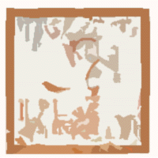

|
 |
#20世紀最後の月、あまり感慨ナシ。 21世紀は違う仕事をしてる筈。 |
-2000.12.21
#昨日今日とバカみたいに忙しかったです、家に帰って4:00a.m.ってどーゆー事ですか?なんだよまったく。
こーゆー時はよく無駄遣いをしますCDを買って。てなわけで会社帰りに渋谷のタワレコ行って無駄遣いしてきました。
-2000.12.16
#忘年会で飲みすぎて、今日一日中ヨワヨワになってました。いつのまにか体弱い人になってたみたいで。鶴巻温泉→武蔵小杉に帰るまで気分悪くて何度も降りてて。シドバレットなんて聴きながら電車乗ってたのも良くないような気もしたんだけどCD変えるのも弱っててする気になれなかったんですよ。
そんなヘロヘロで武蔵小杉→元住吉を歩いてたらOUTDEXのムネカタさんに遭遇。どーやら近所だったようで(最近こんな事多いな)。あんなヘロヘロ状態で恥ずかしいなとか、なんで緊張してんだ俺。
あとEasySeekでwantlistを出していたREAL FISH/tenanをゲット。昔のバイト先の人に借りてテープに録ってあったんだけど、やっぱ特別好きなものは持っていたいので。そーゆーこと。
-2000.12.14
#会社でパーム(最近はやりのPDA)のオセロゲームがちょっと流行ってるんですよ。んで今日の帰りがけにやってみました、俺も、オセロ、数年振りに。
コイツが勝てないんですよ、オセロ。確かパームのCPUって4BITマイコンな筈なのに。んで周りの人はどうかと思ってみたら、「2,3回やれば勝てるよー」とかおっしゃられてます。ていうかもう5回連続で負けてるんだよ、俺は。4bit以下なのか？俺の脳味噌は？とか思いつつもやっぱり勝てませんでした。どーしても隅っこ取られちゃうんですけど、求む必勝法
えーと近所のブックセンターイトウにてイギリスのトラッドフォークのFairport Convention/Liege & Liefが....\100。フツーに名盤って言っちゃってイイようなCDなのに。CDの値段って?価値って?
-2000.12.8
#ジャポニカ2000
会社で夕方、ホリコシさんから電話でした。「今日、ライヴ、秋葉、9時」
で行ってきました。
何がジャポニカ2000なのかと言うと、秋葉でホリコシさんの対バンのジャポニカ2000がガッツ溢れるカッチョイイバンドで、ちょっと惚れたんですよ。
大体名前からしてカッチョイイですよねジャポニカ2000。来年はジャポニカ2001だそうで。
そんなジャポニカを見た後に下北沢のアフロレイクという、これも知り合いのライヴへ。こっちはクラブみたいな感じの非常にゆる〜い感じの所で。ゆるゆるーな感じで見てきて、明け方すでにへろへろになってました、俺。
すごい "ハイ→ロウ" な日でした。
-2000.12.6
#ラーシュでもラルスでも良いけどスゴイ良かった
下の続き、見てきました。ホントスゴイ。
-2000.12.4
#ラーシュなんでしょうか？本人の発音がラルスに聞こえたんですけど。
そんなわけで何の反省もなく20世紀を終えようとしてるのですが、昨日は吉祥寺MANDALA2でLars Hollmerの来日を見てきました。明日も会社休んで見に行きます。異常に知合い/見た事有る人濃度が高かったです、そんな人達で明日の吉祥寺MANDALA2は満員(前売りも当日券もナシ)だそーです。
ちなみに実家に寄ったので、また弟からCD借りてきました。u-ziq/tango n'vectif / GONTITI/マダムQの遺産 / CIBO MATTO/VIVA! La Woman
そのような。